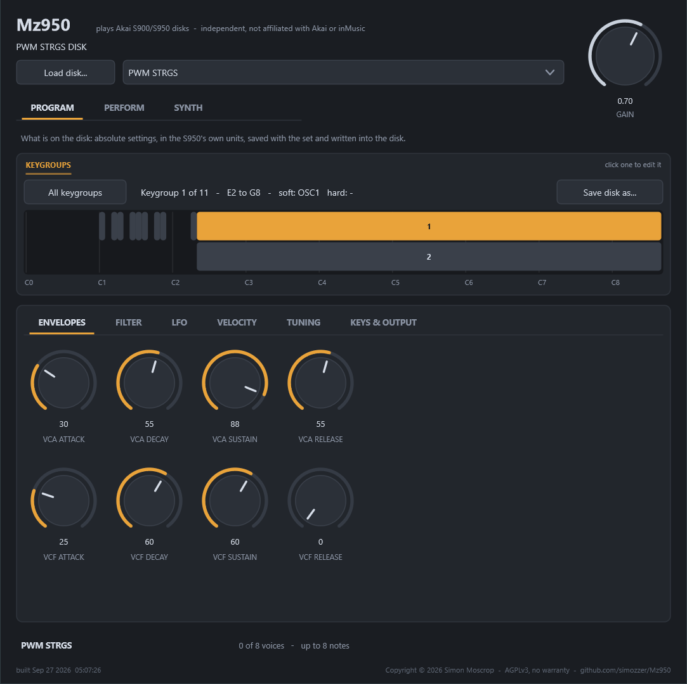
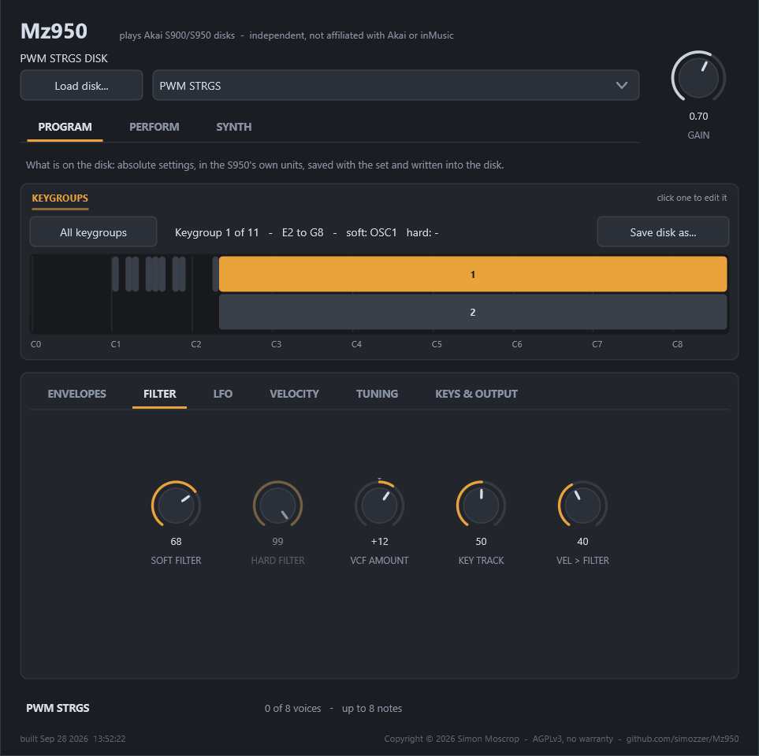
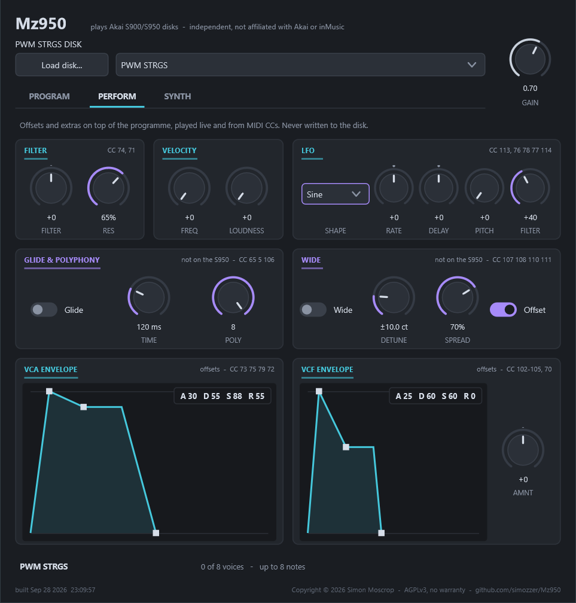
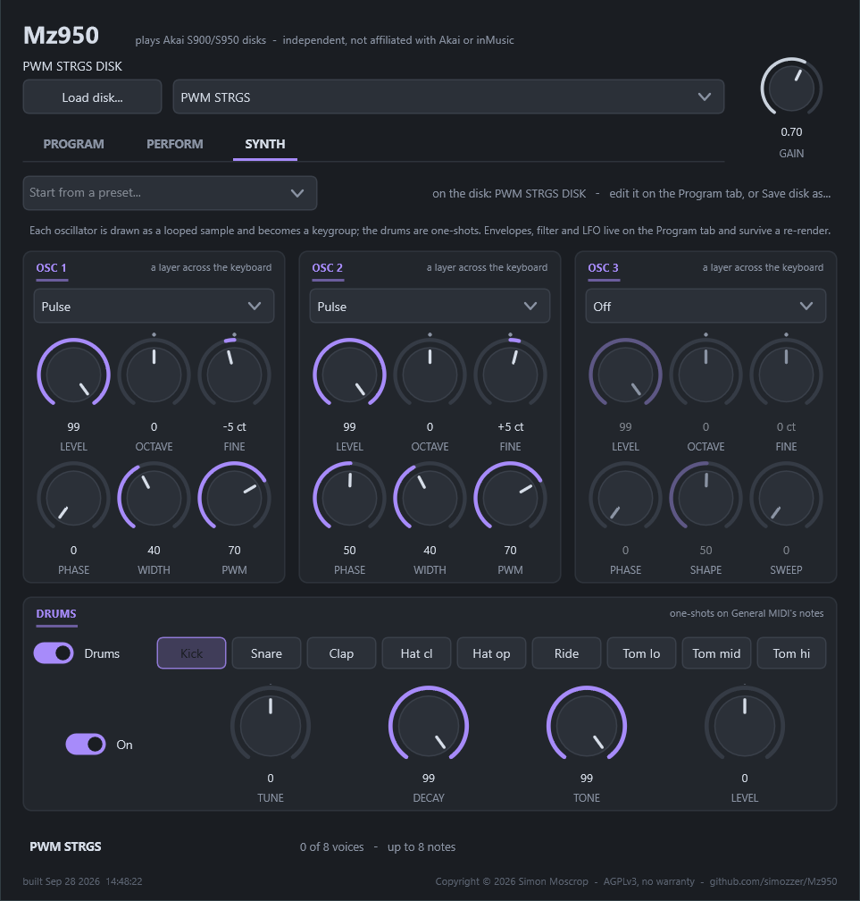

Open a disk, listen to what is on it, change something, and write a new image you can put on a Gotek. It assumes nothing about the S950 beyond having one, or wanting to make disks for one.
Nothing leaves your machine. Every image you open is read on your own computer, and the file you opened is never modified — the program writes a new one.
Back up your images first. This writes a new image rather than altering the original, but the copy you put on your Gotek replaces what was there, and a backup is the only thing that makes a mistake undoable.
Open images on the toolbar, or Ctrl+O. Both
containers are read: the .hfe that archived floppies come in, and the raw 800K
.img. Either can be written back out.
Whole shelves at a time: File → Open Folder (Ctrl+Shift+O) opens every image in a folder at once, and Add Image adds one to what is already open without closing anything.
Or start with nothing. New image makes an empty 800K disk, ready to fill — it is marked unsaved from the moment it appears, because it exists only in this program until you write it.
The first time you ever run it, it opens the bundled BASS.hfe by itself, so
there is something to play with before you have found a disk of your own. After that it
reopens whatever you had open when you last closed it. Close everything before you quit and
it will start empty — that was a decision, so it is respected.
The tree on the left lists what is on each disk, grouped into programs
and samples. A disk with unsaved changes carries a *. The
status bar says whether every sector read cleanly, which is worth a glance — a disk with
bad sectors is telling you something.
Click a program and the right-hand side fills in:
Three words that are easy to muddle, and the whole machine turns on them:
| A program | is the sound you select. It holds keygroups. |
|---|---|
| A keygroup | is a range of keys with its own envelopes, filter and vibrato. Keygroups whose ranges overlap all sound together — that is how a bell sits on top of a pad, and how a split works when they do not overlap. |
| A zone | is one of two samples inside a keygroup. They are velocity alternatives, not a layer: below the velocity switch the first answers, at it and above the second does. A switch of 128 means there is no second zone at all. |
Select a sample and press Play, or Ctrl+P; Ctrl+. stops. On a program, clicking the keyboard plays the keygroup under that key.
Play → Play on Selection auditions each thing as you click it in the tree. It is off by default, on purpose: it is useful when you are hunting through a disk and maddening when you are editing one.
The narrow fader on the right of the keyboard sets the velocity a click carries, and it is worth more than it looks. Velocity opens the filter — a little over an octave between a middling strike and a hard one — so a programme can sound as though it has no filter at all simply because every key was being hit at full force. Drag the fader down and the same note closes right up. It also lifts the level a little, as the machine does.
If the filter still seems to do nothing, the programme is probably written wide open rather than broken. The cutoff cannot go above the rate the audio leaves at, so a sample pitched a long way down has very little room above it, and a stored cutoff near the top of its range is already sitting on that limit.
Drag an envelope corner, or move a slider. Nearly every parameter is a slider because these are things you sweep by ear rather than numbers you arrive knowing: it writes as it moves, the whole drag counts as one undo, and Undo (Ctrl+Z) and Redo (Ctrl+Y) work throughout.
Edits are held in memory. The disk in the tree gets its *, and nothing
touches the file on your drive until you save.
Ctrl-click adds a keygroup to the selection and Shift-click takes the run. The editor shows the one you clicked last, and every control then writes to all of them — one undo, however many it touches. That is how one filter setting goes across a whole drum kit without typing it eight times.
Two boxes wanting MIDI note numbers are a poor way to say something the keyboard says better. Press From keyboard, beside the key range, then click the low key and the high one. The keys shade as you move between them, the same key twice gives a one-key group, the clicks work in either order, and Esc cancels.
Select a sample and press Find loop under the waveform.
The S950 holds a loop as an end point and a length, and plays
end - length .. end round and round. So the only thing to find is how far back
the loop restarts, and the tool looks for the point whose approach matches the approach to
the end — that being the join your ear actually hears.
It reports a match between −1 and 1 and says what to expect of it: inaudible above 0.95, audible below about 0.8, and hopeless on material with no repeating part in it. Applause and running water have no clean loop, and the number says so rather than pretending.
The loop end is a choice, and it matters. A sample meant to be held has a tail after its loop — the release you hear when the key comes up. Loop to the very end of the sample and that release plays round and round with none of it left to hear. The waveform is clickable: put the end where you want it, and the loop is found backwards from there.
The rest of the buttons under the waveform:
There is no way to select a region of the waveform and delete it — the trim is the whole of it. If you need to cut something out of the middle, that is not here yet.
Add sample (Ctrl+I) reads WAV, MP3, FLAC, AAC, Ogg and the rest, and converts to the S950's 12-bit format. You choose the sample rate, the nominal pitch, the loop mode, whether to normalise, and how much of the file to use, and Preview plays the converted audio before anything is written. It refuses outright if the result will not fit in the free blocks, and says by how much — Trim to Fit takes as much as will go.
With two or more images open, right-click a sample or a program and Copy to lists the others. A program never travels alone: every sample its zones name comes with it, or it would arrive silent, so the box that appears itemises the whole set and what it costs in blocks before anything is written.
Nothing on the receiving disk is ever replaced. A name already taken by a different
file is renamed — BASSLOOP arrives as BASSLOOP2, and the
copied program's zones are pointed at the new name so it still plays what it came with. A
name taken by the same file is recognised and skipped, so copying twice costs
nothing the second time.
A single keygroup can go too: right-click its row and Copy Keygroup. That one may land on a program on the same disk, which a whole-file copy will not do, because moving a keygroup between two programs of one disk is an ordinary thing to want. It brings the one or two samples its own zones name, rather than the whole program's.
Export Sample as WAV (Ctrl+W, or right-click a sample) saves it as an ordinary 16-bit WAV at its own rate, for a DAW or another sampler. Export Selected File beside it writes the file exactly as the disk holds it, which is what you want for putting it back on another Akai disk and no use at all in a DAW.
The whole sample comes out, untrimmed. The loop is not baked into the audio: it travels
in the file's smpl chunk along with the root note, so a sampler that reads
that chunk picks the loop up by itself, and one that does not still gets the whole sound.
Nothing is thrown away, so you can still move the markers afterwards.
Save image (Ctrl+S) asks for a name and a
container; Save All Modified (Ctrl+Shift+S)
does every disk carrying a *. Copy the result to your Gotek.
Converting an .img to .hfe builds the whole container from the
sectors, and that encoder reproduces all 101 of the original library disks byte for
byte — a converted disk is not merely readable, it is the same file the Akai drive
wrote.
Pick a port in MIDI in on the toolbar, choose a channel beside it, select a program, and play. Eight voices, with the keygroup under each note deciding the sample, the tuning and the whole voice — filter, envelopes and vibrato included. The same list is under Play → MIDI Input, and it is refilled each time it opens, so a keyboard plugged in after the program started is there when you go looking for it.
Useful for hearing a program as an instrument rather than as a list, and for sending the same part here and to a real S950 to compare the two.
Your modwheel works. The S950 adds vibrato in proportion to it, scaled by a per-keygroup setting that 427 of the library's 1908 keygroups change — so a program that seems to have no LFO may simply be waiting for the wheel.
The vibrato is measured rather than invented: a sine, a rate that runs from 1.8 Hz to 10.6 and is linear in the stored setting, a depth of about 1.5 cents a unit, and a delay that fades the wobble in rather than waiting and then starting it.
Edits are heard as you make them. Move the filter while a note is sounding and the note changes — it is not retriggered, it takes up the new setting the way the machine would.
You do not need a library of floppies to have something to play. The generator that ships beside this program writes complete disks of synthesised sounds — every waveform worked out from its harmonics rather than recorded, band-limited to what the sample rate can hold, with programs built around them:
| BASS | square, FM and noise-shaken basses, and a split with a lead over it |
|---|---|
| LEADS | saws, ring modulation, phase distortion, added fifths and sevenths |
| PADS | wavetable morphs, pulse width, things that dissolve into noise |
| KEYS | FM pianos, organs, bells, and stacks with their own envelopes |
| TEXTURE | wind, hits, hammers and weather |
Open one like any other disk. The programs named SPLIT … change sound
with where you play, and the ones named VEL … change waveform with how hard
you hit — a different oscillator, not the same one turned up.
The same engine runs as a VST3, so a programme off a real disk can be played from a DAW, and as a standalone that opens without one. The installer puts the VST3 where hosts look for it; if your DAW has already scanned, tell it to rescan and Mz950 will be under instruments.
Press Load disk… and pick an image — an .hfe or
.img, 800K or 1600K high density — in the Windows file dialog. It belongs to the
plugin window, so it opens on the same monitor as the plugin and stays on top of it, even when
your DAW keeps plugin windows always on top.
It starts wherever you were last time: beside the disk this instance already has open, or the folder you last chose one from, or the sound library the installer put on your machine.
Two ways, and they are the same thing. The box in the plugin window lists the disk's programmes; so does your host's own program selector, because the disk's programmes are offered to the host as the plugin's programs. In Ableton Live that means the Program chooser in the device title bar, so you can change sound without opening the plugin window at all.
The whole disk is saved into the project, not a path to it. An 800K floppy compresses to a few hundred kilobytes inside the session — nothing beside the audio a song already holds — and it means a saved set can never lose the sound it was made with, on this machine or any other. Move the image, rename it, or open the song on a different computer, and it still plays.
The programme comes back by name first and by position second, so a disk you have since edited and reordered still returns the programme you meant.
Across the top: the disk and programme that are loaded (and, for an .hfe
read off a real floppy, how the recovery went), Load disk…, the programme
box, and Gain — the one control that is neither the programme nor an offset
from it. Along the bottom, voices, counting what is sounding: it answers the
first question anyone asks of a plugin making no noise — is it getting the notes? — without a
debugger. Eight voices, as the machine had. A ninth note takes the voice of a note that is
already releasing before it takes one still held.
Between them, three tabs, and the colours say which kind of thing each control is: amber is what is on the disk, cyan is an offset laid on top of it while you play, and violet is something the S950 never had.

Every setting of every keygroup, as absolute values in the S950's own units and ranges, so
it reads like the machine's front panel. The strip shows the keygroups
across the keyboard, overlapping ones stacked; click one to edit it, or press All
keygroups to move every one together (a control shows * where the
keygroups disagree). The strip lights up as you play: a keygroup that answers
a note gets brighter, with a rim and a marker at the key, so when something sounds wrong you
can see which keygroup to look at.
Six pages hold the settings — Envelopes, Filter, LFO, Velocity, Tuning
and Keys & output — covering all 38 of a keygroup's bytes. An edit is
written into the plugin's copy of the disk image: it is saved with the set (Live asks to save
after one), a note you are holding follows the knob without restarting, and Save disk
as… writes the edited disk as a plain .img that the Studio, this plugin,
and a Gotek or HxC floppy emulator all open.

When a Perform offset is moving one of these, the control shows what is actually sounding underneath it, in cyan: → 52.
What the Program tab does not do is change the shape of a disk: add or delete a keygroup, a sample or a programme, rename anything, slice a break. Those stay in the Studio, where the rules that make writing dangerous are watched. Edit the image there, save it, and load it here.

The offsets, on top of whatever programme is loaded. Every one is an offset from what the disk says rather than a setting: it reads zero until you turn it, double-clicks back to zero, and zero means "play what is on the floppy". That is not a detail. A programme carries its own cutoff and its own envelope for each keygroup, often quite different ones across the keyboard, and an absolute control would flatten all of that the moment you touched it. An offset keeps the shape its author gave the programme and moves the whole of it at once — which is what "brighter" means on an instrument like this.
All of them are automatable by the host, and all of them answer a MIDI controller. The numbers are in each panel's corner:
| Filter | Filter | CC 74 · ±99 |
|---|---|---|
| VCF | Amnt | CC 70 · ±50 |
| VCA envelope | Attack, Decay, Sustain, Release | CC 73, 75, 79, 72 · ±99 |
| VCF envelope | Attack, Decay, Sustain, Release | CC 102, 103, 104, 105 · ±99 |
| LFO | Rate | CC 76 · ×1/64 to ×256 |
| LFO | Delay | CC 78 · ±99 |
| LFO | Pitch | CC 77 · 0–99 |
| Velocity | Freq, Loudness | CC 109, 112 · 0–99 |
72–79 are the General MIDI sound-controller numbers, so a keyboard with knobs already labelled cutoff, attack or vibrato rate reaches the right ones with no mapping at all. 102–105 and 109/112 are undefined numbers, taken for the filter envelope and for velocity because GM has no assignments for those.
The LFO knobs follow the S950's own scale over the S950's own range and carry on past it:
At zero, they're exactly the machine's.
The two envelopes are dragged as shapes rather than set as eight knobs. The corners are the stages, and the graph draws the result for one representative keygroup — the programme's own values with your trim added — so what you see is what that keygroup will sound like, not an abstract curve.
Three things behave in ways worth knowing before they surprise you:
Things the machine never had, in violet, each off or at zero by default, so a disk still plays exactly as the machine would:
| Resonance | Res | CC 71 | A peak at the filter's cutoff, rising to about +15 dB. Past about 92% the filter self-oscillates: it sings a sine at the cutoff, following the Filter knob, the filter envelope and velocity, switched on and off by the amp envelope. For a sine you can play in tune, set the keygroups' key-to-filter to 99 on the Program tab. At 0% it's the S950's filter exactly. |
|---|---|---|---|
| LFO shape | Shape | CC 113 | Sine (the S950's), Saw, Square or S&H. S&H picks a new random pitch every cycle, at Rate. Every shape starts where the sine does, so switching doesn't jump a held note. |
| Tempo sync | Sync, division | CC 115, 116 | Locks the LFO to your DAW's tempo: the Rate knob becomes a division, from 4 bars to 1/64 with dotted and triplet values. With the song playing it follows the song position, so Square and S&H step exactly on the beat, and S&H repeats the same steps at the same bar every time. Without a host it runs at 120 BPM. |
| LFO to filter | Filter | CC 114 | The LFO moves the cutoff too, by up to three octaves either way, independently of Pitch. Try Square or S&H with some Res for the classic stepped filter. |
| Glide | On, Time | CC 65, 5 | Portamento. Each note slides in from the last note played in the same keygroup, over a fixed time (CC 5: 0 is no glide, 127 is three seconds). Crossing into another keygroup does not slide, letting go mid-glide stops it where it is, and drums never glide. |
| Polyphony | Poly | CC 106 | A limit, 1 to 8. At 1 it is mono and plays like a monosynth: legato within a keygroup moves the note without restarting it, gliding if glide is on, and letting go returns to the key still held. Drums play outside the limit, so a kick never steals the lead. |
| Wide | On, Detune, Spread, Offset | CC 107, 108, 110, 111 | Every note as two voices, one detuned flat and leaning left, one sharp by the same amount and leaning right — as loud as one, centred on the true pitch. Four notes at most: the machine's eight voices, two to a note. |

The plugin can make its own sounds, and it makes them as a disk. Each of the three oscillators is drawn from its harmonics so it never aliases, and the three are mixed into one looped sample played across the keyboard, so every note is a single voice and mono and glide move the whole sound; the drums are one-shots on General MIDI's notes (kick 36, snare 38, clap 39, hats 42 and 46, ride 51, toms 41, 43 and 45). The lot is written to a blank disk held in memory, and that disk becomes the loaded one — so the Program tab edits it, Glide and Wide work on it, the set saves it, and Save disk as… puts it on a floppy for a real S950.
An oscillator has a kind (sine, triangle, saw, square, pulse, organ, glass, buzz, hollow, FM at three ratios, ring modulation at two, a bend, phase distortion, and white, pink and brown noise), a level, octave, fine tune (two oscillators a few cents apart is the classic wide sound, and the beating between them is drawn into the loop), a start phase, a shape control whose meaning follows the kind — pulse width, FM index, ring amount, bend, skew, or, for a plain shape, how far it softens toward a sine — and a sweep: how much of that shape travels across the loop and back. That is pulse-width modulation, an FM sweep or a filter-like morph baked into the sample, the way a sampler has always done it, and like every wavetable on a sampler it sweeps faster on higher notes.
Each drum has its own switch, a tune (a change of sample rate, so it gets shorter as it goes up), a decay (the keygroup's own VCA decay), a tone (the zone's filter) and a level. With the kit on, the oscillators move up to start at E2.
Ten presets to start from; a preset replaces the oscillators and brings its own envelope and filter to the disk, and leaves the drums as they were. There are no envelope or filter knobs on this page on purpose: they are on the disk, where the Program tab already edits them — and an edit made there survives a re-render. A change to a level, a tune or a decay reaches a note you are holding without restarting it; a change to the wave itself reaches the next note you play.
Help → About says which version is running.
A keygroup that plays nothing is nearly always a zone naming a sample that is not on this disk; the keygroup list marks those. A program that plays the wrong thing on every key is usually a velocity switch you did not mean — check zone 2.
If an edited disk will not load on the sampler, write it again as HFE from the original rather than converting a converted file, and check the status bar for read errors on the disk you started from.
This is an independent tool with no connection to Akai, offered as-is and with no warranty. It talks to disk images on your computer, never to your sampler, so it cannot reach your hardware directly.
What it can do is write an image your sampler does not like. The disk format was worked out by reading a library of 101 original disks and confirmed on a real S950, and every image this program produces is checked against the structures the sampler depends on — but a malformed image can make an S950 hang while loading. That is recoverable with a power cycle and a good disk, and no fun in the middle of a session. Try an edited disk before you rely on it, and keep that backup.